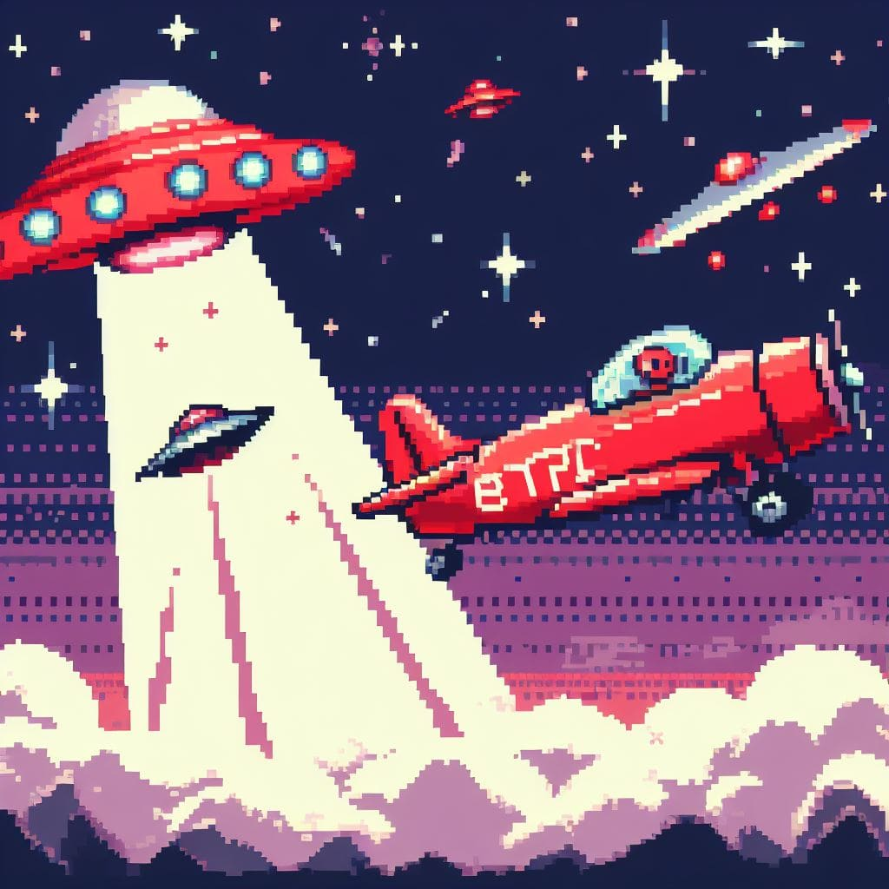

Aulas com Scratch
Programação em blocos como ponto de partida das atividades.
Soli — acervo
Soli nasceu do Estágio Solidariedade e preserva o que foi realizado: aulas de programação, jogos publicados, aplicativo Android, vídeos e materiais.
O que foi o Estágio Solidariedade
O Estágio Solidariedade aproximou crianças da programação em blocos com Scratch. As atividades usaram a criação de jogos para trabalhar lógica, experimentação e temas presentes nas aulas.
Os projetos foram exportados para páginas HTML e disponibilizados no navegador. Hoje, cada arquivo continua acessível como parte do registro do projeto.
Percurso do projeto
Programação em blocos como ponto de partida das atividades.
As crianças criaram jogos durante as atividades e os trabalhos foram publicados.
O acervo ganhou formas de acesso no navegador e no Android.
Materiais em vídeo e o Soli passaram a reunir os registros preservados.
Acervo jogável

Para começar
Um dos jogos publicados no acervo, em que desafios de matemática aparecem em um cenário de aventura espacial.
Abrir jogoOutros registros
O aplicativo e os vídeos não são produtos separados: são partes do que foi construído durante o percurso.
Aplicativo Android
Uma versão Android foi criada para facilitar o acesso aos jogos em dispositivos móveis e apoiar a apresentação dos trabalhos.
Ver app e downloads
Vídeos e materiais
O canal preserva tutoriais e conteúdos relacionados à criação com Scratch, ampliando o registro para além dos jogos.
Assistir aos vídeosQuem participou